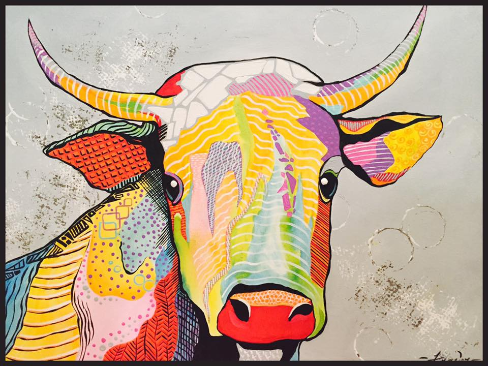

Featured on the homepage, this cow is one of first pieces of art that Mary has done that blends an abstract style with her nature-loving style.This flower is featured on the homepage, and features one of Mary's favorite subjects: Flowers. Featured on the homepage, this is one of her most favorite works, and most prominent on her portfolio. She loves rabbits, and this is one of her first paintings of these animals.Following her love for nature, and wanting to increase her skills in realism painting, she made this work. This was very popular among friends and family and showcases her skills in Realism.Sitting on her window sill for many years, she just recently saw this as a subject for a piece of art. She began painting everyday objects after the wide sucess of this work.Inspired by her religious beliefs, Mary has many paintings that show her faith. This is one of her more popular ones, and it features elegant wings that was a challenge.A rendition of a farm through Mary's eyes, inspired by the local houses that she grew up around. She finds this setting very peaceful, and is one of her favorite settings to paint.Made for one of her paint classes, this art showcases her abstract style with everyday subjects. Even though it was for a painting class, she displays this in her portfolio often.